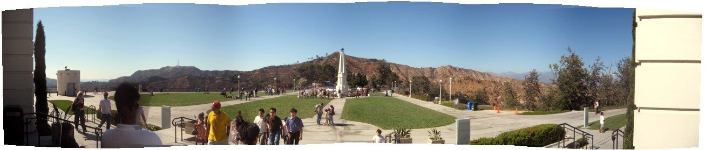
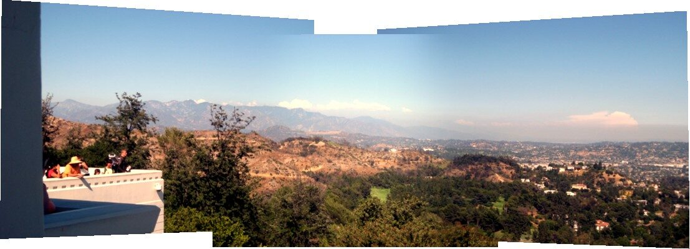
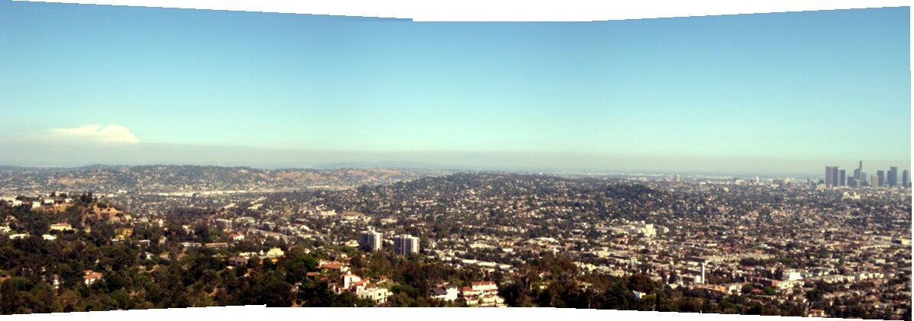
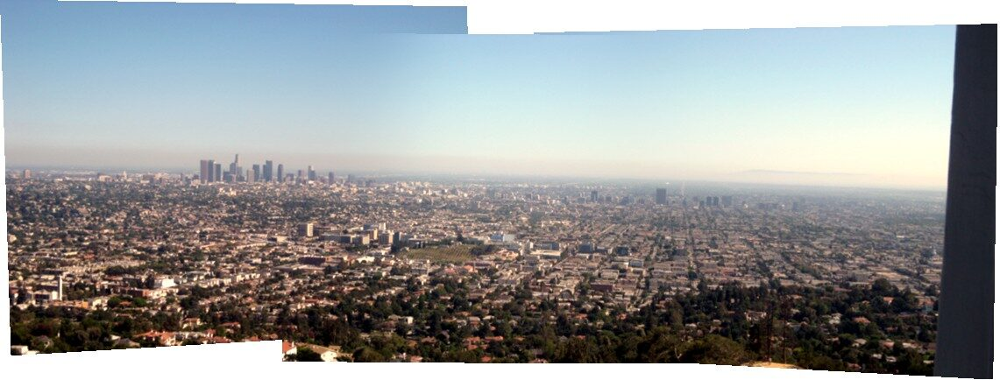
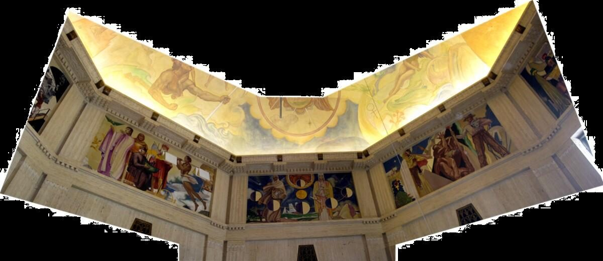
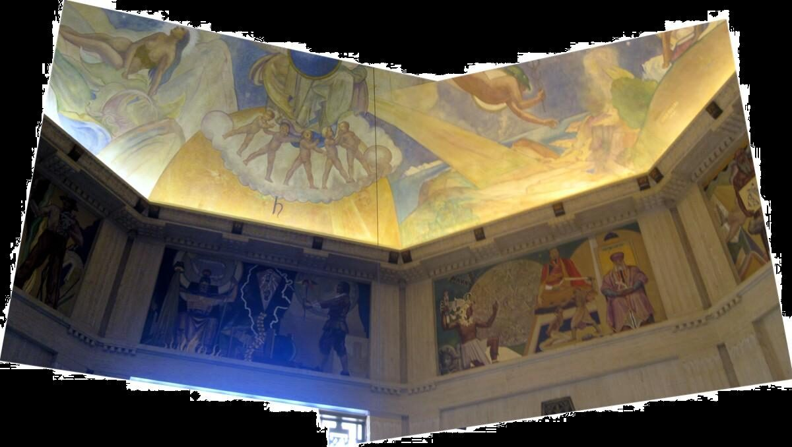
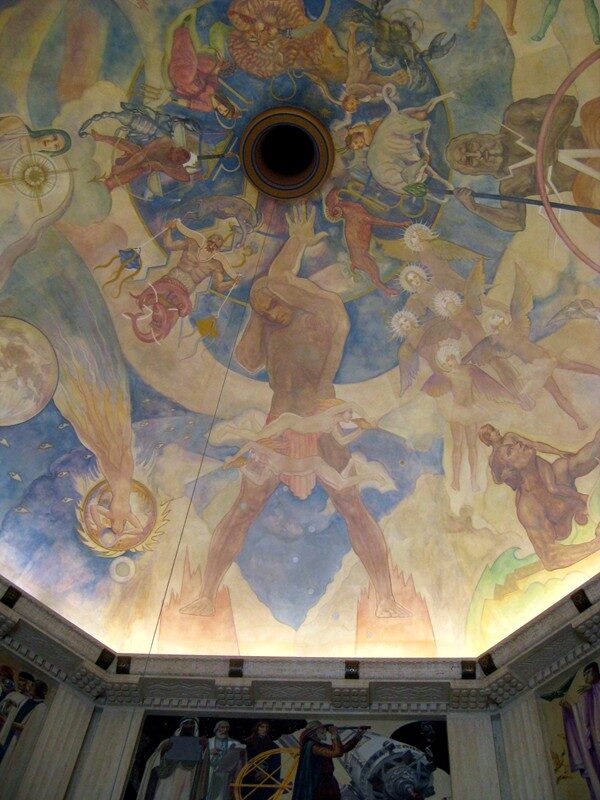
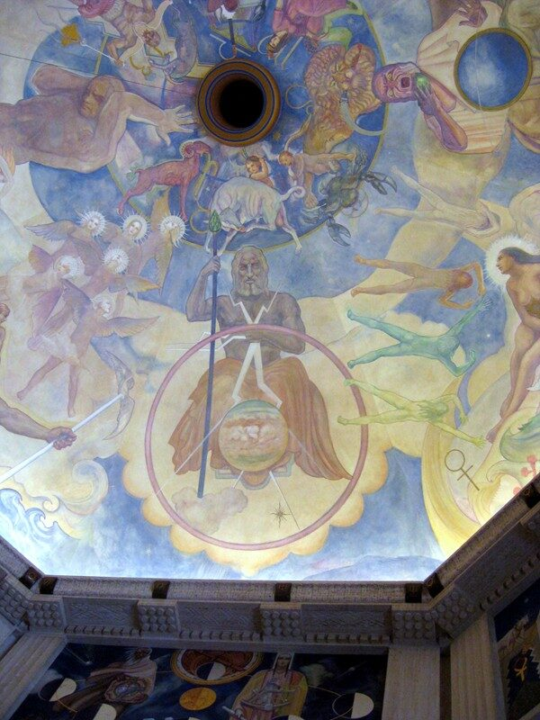
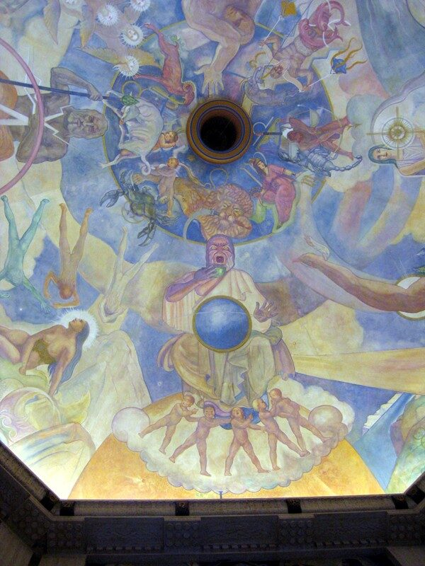

Griffith Park Planetarium
The Planetarium and Observatory were rebuilt in a multi-year project. I took pictures of the view from the front steps, the view from the back terrace, and the frecoes in the dome with the Foucault pendulum.

View from the front steps

View from the back terrace - Part 1

View from the back terrace - Part 2

View from the back terrace - Part 3
Below: Frescos


 |
 |
